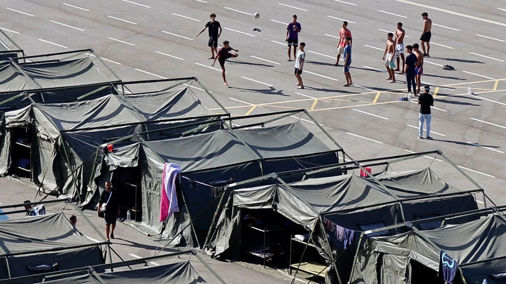

Unter Kontrolle. Nur nicht in Ceuta.

Madrid erklärte, praktisch alle Eingereisten seien zurückgekehrt und niemand könne frei in den Schengenraum gelangen. Danach folgten Grenzkontrollen, Schleuserboote, Festlandtransfers und neue Asylstellen.
Am 7. August erklärte Spaniens Regierung die Krise faktisch für bewältigt. Praktisch alle irregulär Eingereisten seien bereits nach Marokko zurückgekehrt. Niemand könne von Ceuta aus frei in den Schengenraum gelangen.
Zu diesem Zeitpunkt kontrollierte Italien bereits seine Luft- und Seegrenzen zu Spanien. Die offizielle Begründung im Schengen-Register der EU: die Ereignisse in Ceuta und das Risiko sekundärer Migration.
Auch der Weg aufs Festland war offen. Am 21. August meldete Spaniens Nationalpolizei die Zerschlagung zweier Schleusernetzwerke. Fünf Menschen wurden festgenommen. Die Organisationen verlangten bis zu 9.000 Euro pro Passagier.
In einem bestätigten Fall erreichten sieben Migranten die andalusische Küste. Fünf Stunden in einem fünf Meter langen Boot, ohne Schwimmwesten. Die Polizei beschreibt Fahrer, Zwischenquartiere in Ceuta und Abholer auf dem Festland.
Der illegale Weitertransport hatte bereits ein Geschäftsmodell.
Parallel baut die Regierung einen staatlich organisierten Weg auf. Rund 500 unbegleitete Minderjährige sollen von Ceuta auf die Halbinsel gebracht werden. Dort sollen ihre Verfahren fortgeführt werden, einschließlich einer möglichen Familienzusammenführung. Dafür wurden 25 Millionen Euro bewilligt.
Aus „praktisch alle zurückgekehrt“ wurde inzwischen die Rückführung der „größtmöglichen Zahl“. Gleichzeitig bearbeiten elf zusätzliche Mitarbeiter Asylanträge. Acht neue Registrierungsstellen wurden eröffnet, bis zum 4. September sollen es 14 werden.
Pedro Sánchez hatte am 31. Juli versprochen, schnellstmöglich die Normalität wiederherzustellen: „Der Staat ist hier.“
Die Einwohner warteten.
Am 9. August demonstrierten Tausende friedlich. Der Präsident der hinduistischen Gemeinde verlas das gemeinsame Manifest im Namen der Religionsgemeinschaften und der Bürger. Die Kundgebung endete ohne Zwischenfälle. Geschäfte waren geschlossen, Unternehmer meldeten schwere Einbußen, Anwohner beklagten Unsicherheit und untragbare Zustände.
Wochen später eskalierten Teile der Proteste. Gruppen zogen zu den Lagern, zerstörten Unterkünfte und legten Feuer. Die Polizei setzte Tränengas, Antidistanzmittel und Warnsalven ein.
Wer sämtliche Demonstranten nachträglich zum gewalttätigen Mob erklärt, fälscht die Chronologie. Die breite Bürgerbewegung war längst friedlich auf der Straße, während Madrid die Krise bereits für beherrscht erklärte.
Vier Wochen lang blieben Tausende Menschen in einer europäischen Grenzstadt. Schleuser brachten Migranten aufs Festland. Madrid plante Transfers, baute Unterkünfte und verstärkte die Asylbearbeitung. Die Ceutíes bekamen Absperrungen, Polizeieinsätze und weitere Versprechen.
Madrid erklärte die Krise für bewältigt.
Ceuta musste sie weiter tragen.
Mehr dazu: Illegal rein. Weiter aufs Festland. · Ceuta: Erst die Lüge, dann Bilder